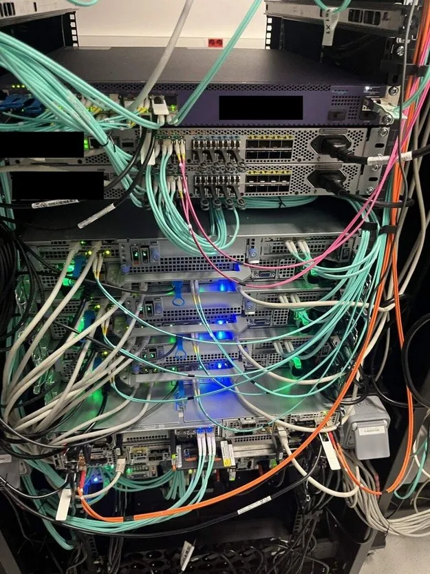

Centre Hospitalier Ardèche Nord
Stage de 1re année, du 18 au 29 mai 2026
Service informatique. Deux missions : le support utilisateurs et la gestion des tickets, puis la réintégration des tablettes sur le réseau.
C1 C2
Les entreprises qui m'ont accueilli pendant le BTS SIO, ma place dans leur service et les missions que j'y ai menées. Chaque mission est présentée dans une fiche en sept points.
Stage de 1re année, du 18 au 29 mai 2026
Service informatique. Deux missions : le support utilisateurs et la gestion des tickets, puis la réintégration des tablettes sur le réseau.
C1 C2
Stage de 1re année, du 1er au 26 juillet 2026
Électronique automobile, en télétravail. Une mission : la refonte de trois pages du site web.
C3
Janvier 2027
Mon stage de 2e année aura lieu en janvier 2027. Sa présentation et ses fiches de missions seront ajoutées après le stage.
Stage de 1re année
Contexte : le service informatique fait en sorte que tous les outils numériques du personnel restent disponibles. Dans un hôpital, la moindre panne d'un poste ou d'un accès peut avoir un impact direct sur la prise en charge des patients.
Ma place dans le service : j'étais rattaché à l'équipe de support et encadré par les techniciens du service.

Les utilisateurs des différents services de l'hôpital envoient leurs demandes sous forme de tickets. J'étais rattaché à l'équipe de support et encadré par les techniciens du service.
Prendre en charge et résoudre les tickets qu'on m'attribuait : problèmes matériels, demandes de comptes et de droits d'accès, dysfonctionnements d'applications métier.
Chaque demande suit le même circuit, de sa création à sa clôture :
Je faisais le premier diagnostic en autonomie. En cas de blocage, ou avant une action sensible comme une modification de droits d'accès, je demandais l'avis d'un technicien.
Premier exemple : une imprimante d'étiquettes Zebra ZD421 n'était pas détectée sur le réseau. Le diagnostic a montré un problème de configuration IP sur l'imprimante. Une fois la configuration corrigée et le pilote réinstallé, elle a fonctionné de nouveau.
Deuxième exemple : un poste redémarrait tout seul avec un écran bleu. Un test de diagnostic complet (mémoire, disque, carte vidéo) a été lancé sur le poste. Il n'a montré aucune panne matérielle. Le problème venait d'un pilote ou d'une mise à jour logicielle.
Chaque matin, je faisais aussi une vérification visuelle des salles serveur, accessibles par badge, pour repérer les voyants rouges qui signalent une anomalie.
Voir le tableau de synthèse des compétences.
L'imprimante Zebra a été remise en service. Sur le poste à l'écran bleu, la panne matérielle a été écartée.
Cette mission m'a appris à diagnostiquer rapidement un problème à partir d'une description parfois imprécise, et à expliquer les choses simplement à des personnes qui ne sont pas informaticiennes.
Les deux interventions les plus difficiles ont concerné l'imprimante Zebra et le poste qui redémarrait tout seul (voir le point 3).
J'ai aussi compris qu'il faut être réactif dans un hôpital, parce qu'une panne a des conséquences directes sur le travail des équipes soignantes.
Des tablettes utilisées par les enfants dans différents services de l'hôpital n'avaient plus accès au réseau, à la suite d'une purge de la liste des appareils autorisés.
Redonner à ces tablettes l'accès au réseau et à Internet.
J'ai relevé l'adresse MAC de chaque tablette concernée. Les tablettes ont ensuite été réintégrées sur le réseau. Voici le format d'une adresse relevée, avec les trois derniers segments, propres à chaque appareil, volontairement masqués :
Adresse MAC relevée (exemple) : E0:B5:5F:XX:XX:XXVoir le tableau de synthèse des compétences.
Les tablettes ont retrouvé l'accès au réseau et à Internet.
Cette mission était ponctuelle et ne m'a pas posé de difficulté particulière. Elle m'a fait recenser des adresses MAC directement sur les tablettes. Elle m'a aussi montré concrètement qu'un appareil doit figurer, avec son adresse MAC, sur la liste des appareils autorisés pour accéder au réseau.
Stage de 1re année
Ma place dans l'entreprise : j'étais chargé de la refonte de trois pages de son site web.
L'entreprise voulait refaire trois pages de son site web : Tarifs, Services et Contact. Je travaillais en télétravail, sur une période de quatre semaines. Pour réaliser certaines fonctions des pages, je devais utiliser le JavaScript, que je ne connaissais pas encore.
Pendant le stage, j'ai commencé la refonte des trois pages, mais je ne l'ai pas terminée : le temps a manqué, et j'ai dû apprendre le JavaScript en même temps.
Après le stage, j'ai terminé les pages en autonomie, en HTML, CSS et JavaScript, sans framework :
Voir le tableau de synthèse des compétences.
Les trois pages sont terminées. Elles n'ont pas été publiées sur le site réel de l'entreprise.
Ce qui n'a pas marché : je n'ai pas pu finir la mission pendant le stage, par manque de temps et parce que je devais d'abord apprendre le JavaScript.
La solution : j'ai terminé les pages en autonomie après le stage.
Ce que j'ai appris : les bases du JavaScript, avec le menu mobile et la validation d'un formulaire, et l'utilisation des variables CSS.